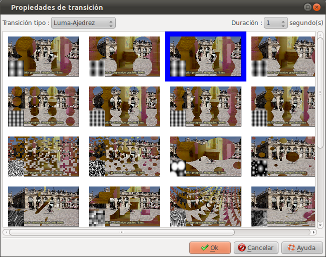
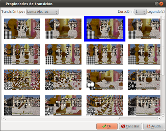

Introducción
La ventana de diálogo con las propiedades de transición
permite definir la transición de entrada para la diapositiva :

Esta ventana se abre haciendo doble clic en la zona de transicián de las diapositivas, en la línea de tiempo de la ventana principal.

Esta ventana se abre haciendo doble clic en la zona de transicián de las diapositivas, en la línea de tiempo de la ventana principal.
Descripció de la ventana
| Transición tipo | Permite seleccionar familia de transición :
|
||||||||
| Duración |
Permite definir la duración de la animación. Las opciones son las siguientes:
|
Consulta también
- Índice del WIKI de ffDiaporama
- Cómo trabaja ffDiaporama
- La línea de tiempo
- Configurar la pista de sonido
 WIKIPEDIA |
Descripción de LUMA |
© Proyecto ffDiaporama